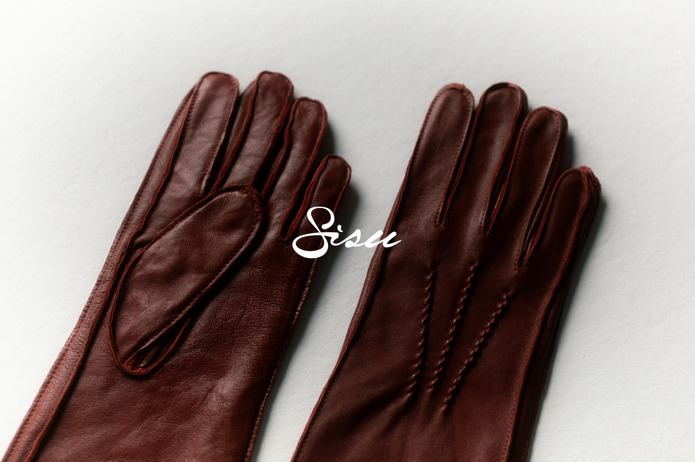
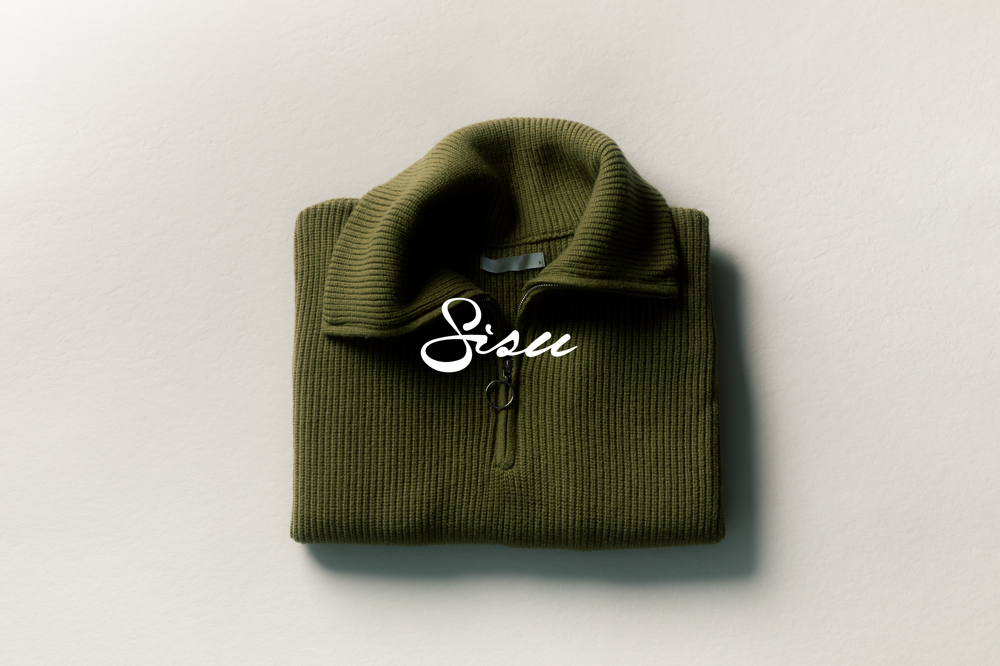
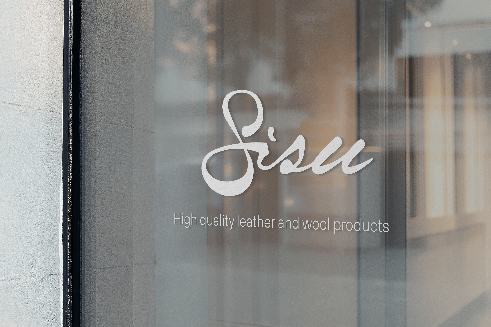
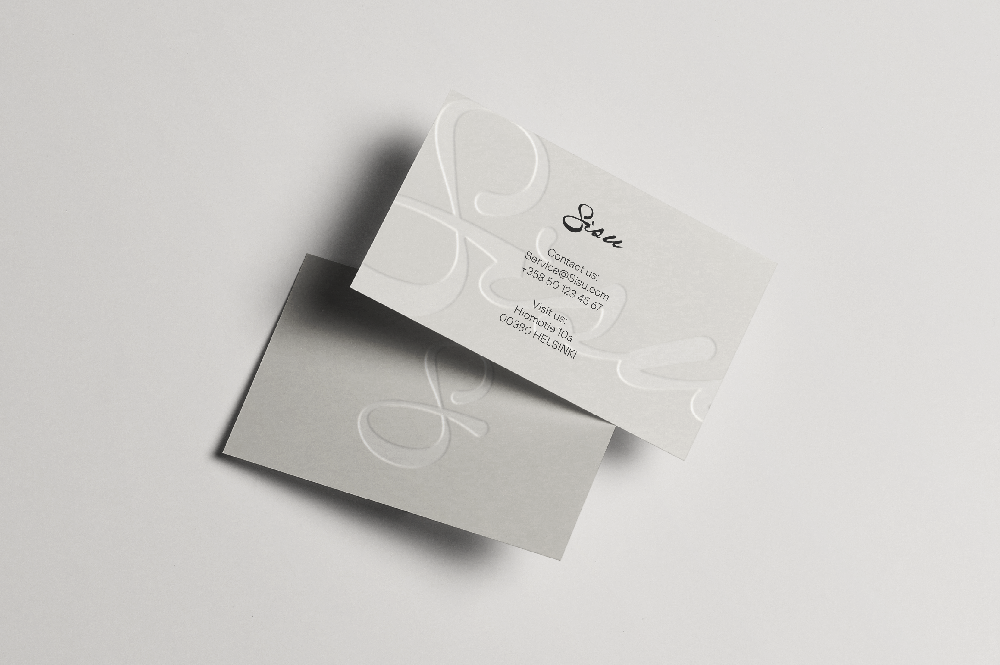

Sisu
A finnish clothing brand that specializes in high quality hand crafted leather and wool products. Built on restraint, quality, and respect for what it creates.
The Sisu wordmark and logo are drawn in a handmade script to reflect the brand’s human, intentional approach. In contrast to the clean, mass-produced look of many modern brands, the organic lines bring warmth, individuality, and imperfection. These qualities align with Sisu’s slow, on-demand way of working.
Sisu uses deep, grounded tones like red, olive, and blue to evoke timelessness and craftsmanship. These are paired with a soft beige and black base in the designs, creating a calm, minimal backdrop that lets the products and identity speak for themselves.
Sisu works with an on-demand production model. Every product is created only after it’s ordered, eliminating excess stock, waste, and the pressure to constantly push new drops.Every Sisu product is designed with longevity in mind, from material choice to construction. By creating fewer, better things, the brand reduces the need for constant replacement.